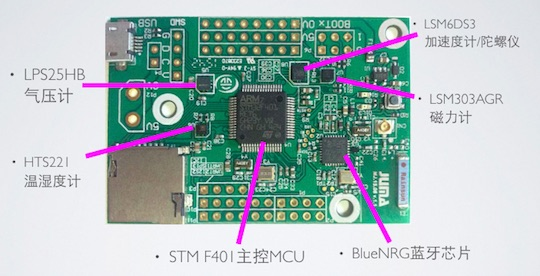

Cannon (小钢炮)
设计思想
随着物联网的兴起，低功耗蓝牙在开发者中受到了越来越高的重视。常见的低功耗蓝牙实现有SoC和“MCU+蓝牙透传模块”两种方案。
SoC方案的典型代表为Nordic nRF51822、TI CC254x系列、和Dialog的DA1458x系列等。它们的优势在于成本更低、系统简单、PCB可以做的小巧。不过开发者使用下来也感受到一些不足：比如MCU的计算能力薄弱，难以进行复杂的例如傅里叶变幻等算法；GPIO、ADC、TIMER、总线等数量有限；系统实时性不高等。
“MCU+蓝牙透传模块”方案的优势在于灵活，譬如，它可以选用性能强大的MCU搭配一个蓝牙SoC芯片，后者仅负责蓝牙通信，前者负责高复杂度运算和处理实时性任务，从而弥补了单纯用SoC方案的缺点。然而，这种方案遇到的不足之处在于：MCU和蓝牙透传模块之间欠缺标准的指令集和总线协议，不同蓝牙透传模块的通信品质参差不齐，而且整体成本不够理想。
Cannon平台有效解决了上述问题，它采用了“MCU+BlueNRG”的方案。BlueNRG是一个意法半导体(ST)的一款低功耗蓝牙收发器，相对SoC芯片来说成本更低，它与MCU之间通过标准的蓝牙HCI协议(Host-Controller Interface)进行连接，更适合蓝牙数据传输，而且又可以灵活搭配MCU以满足不同场合的应用需求。
平台优势
为了打造一个通用的低功耗蓝牙物联开发平台，Caonn平台做到了：
- 板载典型意法半导体(ST)的传感器，包括加速度计、陀螺仪、磁力计、温湿度计、气压计等；
- 支持丰富扩展I/O接口，如USB、TF卡、GPIO、UART、SPI、I2C等；
- 软件搭载JUMA SDK，包含了低功耗蓝牙(BLE)、传感器、设备驱动等常用API接口；
- 提供开源代码、进阶教程、以及各类应用案例；
此外，结合我们硬件产品的开发经验，我们发现非工程领域（如供应链、生产加工、市场推广等方面）也会给开发者建立无形的门槛。为此，我们联合小伙伴，为Cannon平台开发者提供以下优势服务：
- 供应链方面，由威雅利电子(Willas-Array，ST金牌代理商)提供稳定货源和具有竞争力的采购价格；
- 生产加工方面，由博联科技(Beelinker)提供全套服务，包括PCB生产、贴片、成品测试等；
- 建立开发者社区，开发者可以在社区中分享使用心得、接洽项目、提供软硬件IP等；
硬件特性

1. 处理器：STM32F401
- ARM Cortex-M4，最高可达84MHz frequency；
- 512KB Flash / 96KB SRAM；
- 1.7V-3.6V供电电压；
2. 低功耗蓝牙芯片：BlueNRG
- 发射功率最高可达+8dBm；
- 发射峰值电流8.2mA @0dBm, 3V；
- 待机电流1.7uA；
- 支持蓝牙Master与Slave模式；
- 支持蓝牙GAP、GATT、SM、L2CAP、LL、RF_PHY层；
- MCU接口：HCI(Host-Controller Interface) over SPI；
- 附有巴伦天线匹配芯片；
3. 传感器阵列
4. 其他
- 3组I2C、4组SPI、3组UART、USB、TF卡槽等、按键、LED等；
- 可选择的Cable天线和陶瓷天线；
- 可选择的USB供电、电池组供电；
软件特性
- JUMA SDK；
- 低功耗任务调度机制，支持32个任务调度；
- 开放BLE API接口（嵌入式端/APP端）；
- 传感器数据接口（嵌入式端/APP端）；
- 嵌入式软件空中升级（嵌入式端/APP端）；
- To Be Continued...；